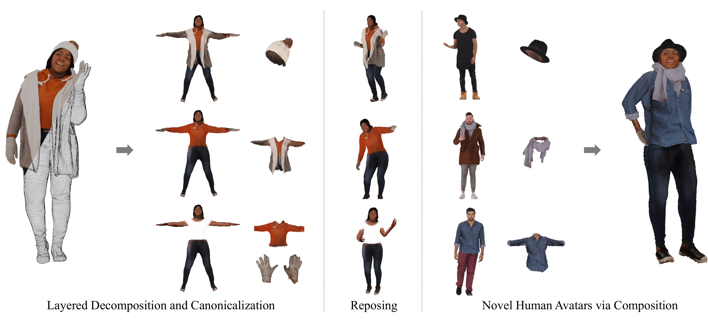
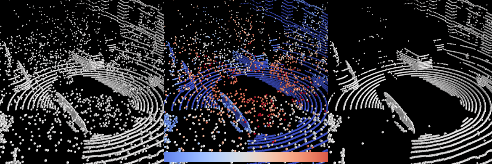

|
I am currently a MS/PhD student at Seoul National University(SNU), advised by Hanbyul Joo. I'm interested in computer vision and machine learning, especially in 3D. |
{kind=link}
News
- Jul. 2023: Our work Chupa: Carving 3D Clothed Humans from Skinned Shape Priors using 2D Diffusion Probabilistic Models was accepted to ICCV 2023.
- Jul. 2022: Our work SLiDE: Self-supervised LiDAR De-snowing through Reconstruction Difficulty was accepted to ECCV 2022.
- Jul. 2022: Joined SNU's Visual Computing Lab!
- Jun. 2022: Completed my military service in Agency for Defense Development(ADD) as a Research Officer for National Defense(ROND).
- Feb. 2019: Got my Bachelor's degree in Electrical Engineering at KAIST.
Research
|  |
Taeksoo Kim*, Byungjun Kim*, Shunsuke Saito, Hanbyul Joo [ Project Page / Code / arXiv ] We present GALA, a framework that takes as input a single-layer clothed 3D human mesh and decomposes it into complete multi-layered 3D assets. |

|
Byungjun Kim, Patrick Kwon, Kwangho Lee, Myunggi Lee, Sookwan Han, Daesik Kim, Hanbyul Joo ICCV, 2023 (Oral Presentation) [ Project Page / Code / arXiv ] We propose Chupa, a 3D human generation pipeline that combines the generative power of diffusion models and neural rendering techniques to create diverse, realistic 3D humans. |
|  |
Gwangtak Bae, Byungjun Kim, Seongyong Ahn, Jihong Min, Inwook Shim ECCV, 2022 [ arXiv ] We propose a novel self-supervised learning framework for snow points removal in LiDAR point clouds. |